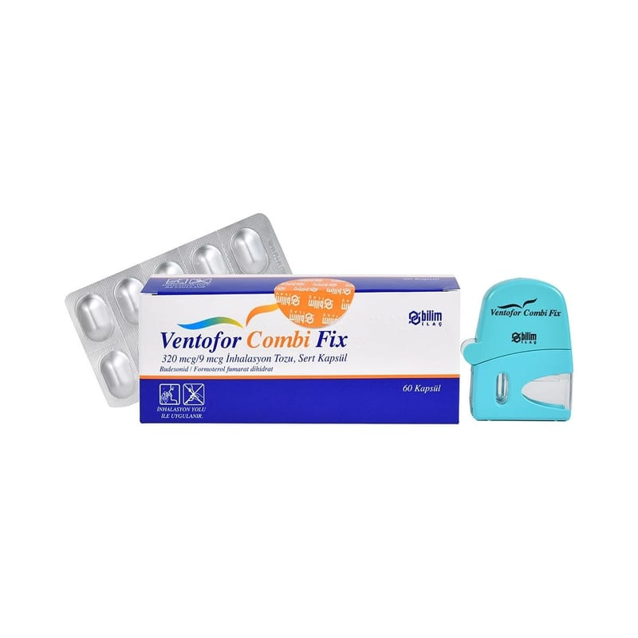

Ventofor Combi Fix 320 mcg/9 mcg İnhalasyon Tozu, Sert Kapsül, 60 Kapsül

Ne için kullanılır
KT · Bölüm 1VENTOFOR COMBİ FİX inhalasyon yoluyla kullanılan bir ilaçtır. İki farklı aktif madde olan formoterol fumarat dihidrat ve budesonid tek bir kapsül içindedir.
• Budesonid ‘kortikosteroid’ olarak adlandırılan bir grup ilaca dahildir. Akciğerlerinizdeki şişme ve iltihaplanmayı azaltarak ve önleyerek etki gösterir. • Formoterol fumarat dihidrat ‘uzun etkili beta-agonistler’ veya ‘bronkodilatörler’ olarak adlandırılan ilaçlar grubuna dahildir. Solunum yollarınızdaki kasların gevşemesini sağlamak suretiyle etki gösterir. Bu sizin daha kolay nefes almanızı sağlar. • Doktorunuz size bu ilacı astım (vücudun dışındaki havayı akciğerlere taşıyan tüpler olan bronşiyal hava yollarında sürekli bir yangı) veya kronik (sürekli) tıkayıcı (obstrüktif) akciğer hastalığı (KOAH) tedavisi için reçete etmiştir.
Sayfa 2 Astım: VENTOFOR COMBİ FİX, astım belirtilerinin düzeltilmesi ve kontrol altına alınması amacıyla kullanılır. Astım hastalığının basamaklı tedavisinde 3. basamaktan itibaren kullanılır.
Doktorunuz astım için size iki astım inhalatörü reçete edecektir: VENTOFOR COMBİ FİX ve ayrıca bir “rahatlatıcı inhalatör”.
• VENTOFOR COMBİ FİX’i her gün kullanınız. Bu sayede astım belirtilerinin ortaya çıkması engellenir. • ‘Rahatlatıcı inhalatörü’ ise astım belirtileri ortaya çıktığında, tekrar nefes almayı kolaylaştırmak için kullanınız.
VENTOFOR COMBİ FİX’i rahatlatıcı inhalatör olarak kullanmayınız.
Kronik Tıkayıcı Akciğer Hastalığı (KOAH): Orta ve ağır KOAH olgularında belirtileri ve atak sıklığını azaltır. KOAH çoğunlukla sigara içmenin yol açtığı, solunum yollarının akciğerlerdeki uzun süreli bir hastalığıdır.